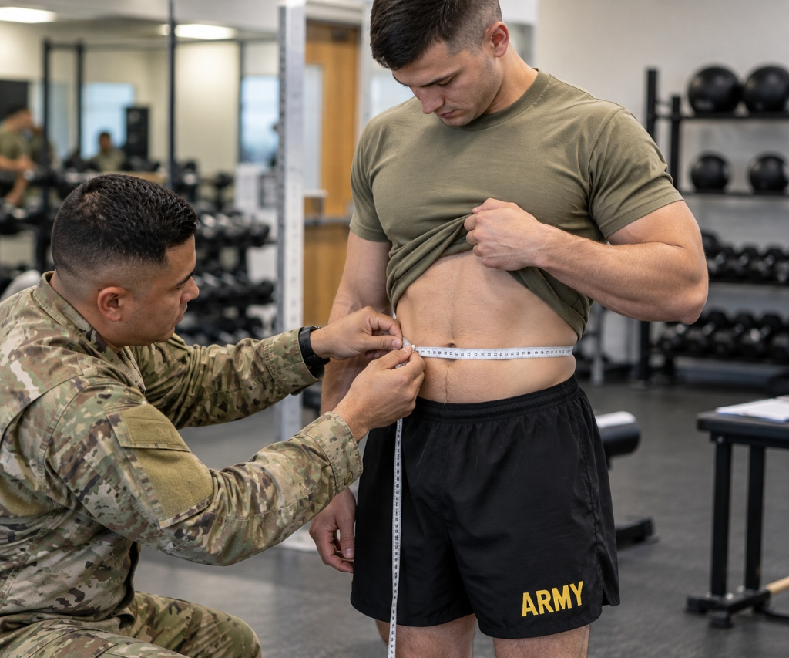

Army Waist to Height Ratio Calculator: Formula, Examples and Results (2026)

An Army waist to height ratio calculator helps users understand how waist circumference and height are used to calculate the Waist-to-Height Ratio (WHtR). The U.S. Army adopted WHtR as its official body composition screening method under Army Directive 2026-13, published on July 7, 2026.
The calculation is simple: divide waist circumference by height, using the same measurement unit for both values. Under the published Army standard, a WHtR below 0.55 meets the numerical screening threshold.
In this guide, you will learn how the Army WHtR calculator works, understand the calculation formula, compare example results, and discover how to interpret the ratio correctly.
What Is an Army Waist to Height Ratio Calculator?
An Army waist to height ratio calculator is an educational readiness tool that calculates WHtR using two primary measurements: waist circumference and standing height.
The result is a decimal number that represents the relationship between waist size and height. For example, a ratio of 0.543 means the waist circumference is approximately 54.3% of the person's height.
The calculator helps Soldiers, unit leaders, and fitness coaches understand current Army body composition screening requirements before official duty-day tape assessments.
Unlike traditional height and weight screening charts, WHtR does not require a complex maximum weight table for each inch of height. Instead, it relies on one universal equation that applies equally to male and female Soldiers. If you want to compare your current status with historical standards, explore our Old Screening Table Archive.
Army WHtR Formula: How Is It Calculated?
The formula for calculating waist-to-height ratio is straightforward:
Both measurements must use the same unit. You can use inches for both measurements or centimeters for both measurements.
Standard Calculation Example:
Waist circumference: 38 inches
Height: 70 inches (5'10")
Calculation: 38 ÷ 70
Result: 0.543
Assessment: The resulting WHtR is 0.543, which is below 0.550 and successfully meets the screening standard.
Remember that the formula uses division, not addition or multiplication. Using the wrong mathematical operation will produce an incorrect result. For detailed mathematical breakdowns, read our tutorial on How to Calculate WHtR for Army (Formula & Examples).
How to Use an Army Waist to Height Ratio Calculator
Follow these four simple steps to calculate your waist-to-height ratio accurately:
Step 1: Enter Your Waist Circumference
Measure your waist at the navel (belly button) according to the applicable Army measurement instructions. Keep the measuring tape horizontal and snug without depressing soft abdominal tissue. Record the measurement accurately in inches or centimeters.
For comprehensive instructions on tape tension and posture, consult our dedicated guide on How to Measure Waist for Army WHtR.

Step 2: Enter Your Height
Use your accurate standing height measurement taken barefoot against a stadiometer. If your height is in feet and inches, convert the entire value to total inches (for example, 5 feet 10 inches = 5 × 12 + 10 = 70 inches).
Step 3: Calculate the Ratio
Divide your waist circumference by your height. If using our interactive tool, the calculator immediately computes:
WHtR = 38 ÷ 70 = 0.543
Step 4: Understand the Result
Compare the calculated ratio with the published Army threshold of strictly less than 0.550. For official screening, the Army records WHtR to three decimal places on DA Form 5500 and submits the entry through the ATIS Leader Tool.
Launch the Official Tool:
You can use our free interactive Army Height and Weight Calculator to explore Army-related measurements, test different body scenarios, and verify compliance under current AR 600-9 regulations.
Army WHtR Calculator Examples: Passing and Non-Passing Results
The following table uses a standing height of 70 inches (5'10") to illustrate how small waist circumference changes impact the final ratio:
| Standing Height | Waist Circumference | WHtR Ratio | Screening Outcome |
|---|---|---|---|
| 70 inches (5'10") | 36 inches | 0.514 | Below 0.55 (Pass) |
| 70 inches (5'10") | 38 inches | 0.543 | Below 0.55 (Pass) |
| 70 inches (5'10") | 39 inches | 0.557 | 0.55 or higher (Exceeds) |
| 70 inches (5'10") | 40 inches | 0.571 | 0.55 or higher (Exceeds) |
These examples illustrate the calculation only. A personal calculator result does not replace an official Army assessment or its confirmation procedures.
What Is the Army's WHtR Standard in 2026?
The published Army standard is a waist-to-height ratio strictly below 0.55.
A result of 0.549 is below the threshold and meets the standard. A result of exactly 0.550 does not meet the numerical standard because the requirement is strictly less than 0.55.
According to official Army guidance, Soldiers whose initial WHtR is 0.55 or higher receive a confirmation measurement by a different team on the same duty day. If the confirmed result still does not meet the standard, the Soldier is enrolled in the Army Body Composition Program (ABCP) and flagged under AR 600-8-2.
Soldiers undergo WHtR screening at least twice per calendar year. For the latest administrative guidelines, consult the official Army Body Composition Program guidance.
WHtR vs. BMI: What Is the Difference?
WHtR and Body Mass Index (BMI) are two fundamentally different health and screening metrics:
WHtR compares waist circumference with height, serving as an indicator of abdominal adiposity. BMI compares total body weight with height squared, which frequently misclassifies heavily muscled Soldiers as overweight.
| Feature | Waist-to-Height Ratio (WHtR) | Body Mass Index (BMI) |
|---|---|---|
| Full Name | Waist-to-Height Ratio | Body Mass Index |
| Measurements | Waist circumference & height | Total weight & height |
| Formula | Waist ÷ Height | Weight (kg) ÷ Height² (m) |
| Result | Decimal ratio (e.g. 0.543) | Numerical score (e.g. 26.5) |
| Army Screening Role | Current official body composition screening standard under Directive 2026-13 | Not authorized for Army body composition screening |
Although both measurements utilize height, they are not interchangeable. A BMI calculator cannot replace an Army WHtR calculator when preparing for military compliance.
Common Mistakes When Using an Army WHtR Calculator
Avoid these common calculation and measurement errors:
- Mixing units: Do not divide waist circumference in centimeters by height in inches. Convert both values to identical units prior to division.
- Using inaccurate measurements: Guessing your height or estimating your waist circumference produces invalid calculations.
- Rounding too early: Maintain at least three decimal places (e.g. 0.543 rather than 0.54) during calculation.
- Confusing WHtR with BMI: BMI formulas do not assess abdominal circumference and cannot predict Army pass/fail status.
- Relying on outdated calculators: Ensure your online tool does not use retired Table B-1 weight limits or discontinued neck/hip tape test formulas (which can be reviewed in our Army Body Fat Calculator).
Frequently Asked Questions
What is the formula for the Army waist-to-height ratio calculator?
Divide waist circumference by height using the same unit. For example, 38 inches divided by 70 inches equals approximately 0.543.
What is a passing Army WHtR result?
The published numerical threshold is strictly below 0.550. A result equal to or greater than 0.550 does not meet that threshold.
Can I calculate WHtR using centimeters?
Yes. Divide waist circumference in centimeters by height in centimeters. Both measurements must use the same unit.
Does an Army WHtR calculator guarantee that I will pass screening?
No. An online calculator provides an estimate based on the measurements entered. Official Army screening, confirmation measurements, and applicable policy determine the official outcome.
Is the Army still using height and weight tables?
No. The Army replaced the former height and weight screening tables and previous circumference-based assessment methods with WHtR under Army Directive 2026-13.
Final Thoughts
An Army waist to height ratio calculator makes it simple to understand the current WHtR formula and evaluate example screening results. Measure waist circumference accurately at the navel, ensure identical measurement units for height and waist, and divide the two values to calculate your ratio.
The published Army threshold is below 0.550, but an online calculation is informational rather than an official clearance. Always consult current Army guidance for official screening requirements.
Official References
- Army Body Composition Program (ABCP) →
- Army Directive 2026-13 Policy Announcement →
- Use our Army Height and Weight Calculator to explore related Army measurements and body composition screening information.